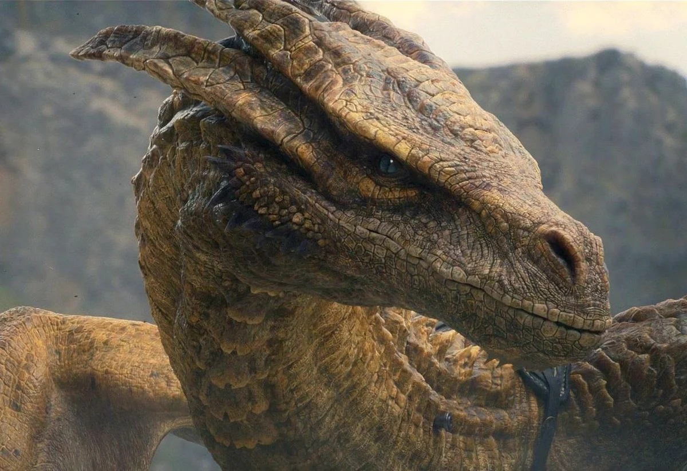

Balerion
Balerion, známý také jako Black Dread (Černý děs) byl drak rodu Targaryenů. Jeho prvním známým jezdcem byl král Aegon I. Targaryen, který jej sedlal během dobytí Západozemí. Jeho dalšími známými jezdci byli král Maegor I. Targaryen, princezna Aerea Targaryen a princ Viserys Targaryen.
Vhagar

Vhagar byla dračice rodu Targaryenů. Jezdila na ní královna Visenya Targaryen během Aegonova dobývání, spolu s Balerionem a Meraxes. Dalšími známými jezdci Vhagar jsou princ Baelon Targaryen, lady Laena Velaryon a princ Aemond Targaryen.
Meraxes
Meraxes byla dračice rodu Targaryenů. Jezdila na ní královna Rhaenys Targaryen během Aegonova dobývání, spolu s Balerionem krále Aegona Dobyvatele a Vhagar jejich sestry královny Visenyi. Meraxes byla pojmenován po jednom z bohů Staré Valyrie.
Drogon
Drogon je jedním z draků narozených v Dothrakském moři. Daenerys ho pojmenovala po jejím mrtvém manželovi Drogovi. Drogon je považován za reinkarnaci Baleriona Černého děsu, ale Daenerys se rozhodne dát mu nové jméno pro jeho nový život. Drogon je největší a nejagresivnější ze všech tří.
Rhaegal

Rhaegal je jedním z draků narozených v Dothrakském moři spolu s Drogonem a Viserionem. Byl pojmenován Daenerys Targaryen po jejím bratrovi, princi Rhaegara Targaryenovi.
Viserion
Třetí drak patřící Daenerys, Viserion, byl pojmenován po jejím zesnulém bratrovi Viserysi Targaryenovi. Nakonec byl zabit a vzkříšen jako ledový drak Nočním králem.
Syrax
Syrax byla dračice. Byla sedlána výhradně Rhaenyrou Targaryen. Její jméno pochází od bohyně z Valyrie.
Caraxes
Caraxes, zvaný Blood Worm (Krvavý červ), byl drak, na kterém nejprve jezdil princ Aemon Targaryen a později princ Daemon Targaryen.
Meleys
Meleys, zvaná The Read Queen (Červená královna), byla dračice, na které jezdila princezna Alyssa Targaryen a později princezna Rhaenys Targaryen. Drak byl popsán jako „skvělý“ a „velkolepý“.
Vermithrax
Vermithrax byl drak, který byl vyšlechtěn rodem Targaryenů. Po jeho smrti jeho lebka zdobila Rudou Baštu v Králově přístavišti.